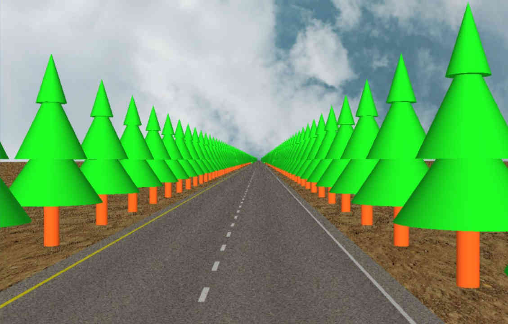
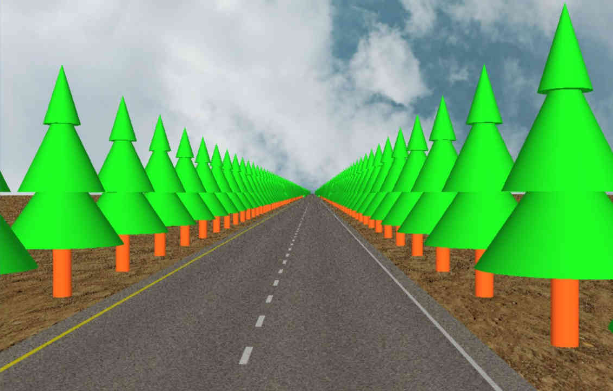

Computer Graphics
"EXPLORE MY WORK REALTED WITH GRAPHICAL APPLICATIONS"
Informática Gráfica
"DESCUBRE MI TRABAJO RELACIONADO CON LAS APLICACIONES GRÁFICAS"
OpenGL
Brazo Robótico
Robotic Arm

Este fue mi primer proyecto hecho con OpenGL durante la carrera en el que se representa un brazo robótico con la capacidad de interactuar con una tetera. Utiliza OpenGL para renderizar los objetos yse controla el movimiento del brazo mediante el teclado. La rotación de las diferentes partes del brazo se realzia empleando operaciones compuestas con matrices, además de la simulación de agarre de la tetera, el manejo de las transformaciones geométricas y la detección de colisiones entre la mano del brazo y la tetera.
This was my first project done with OpenGL during my degree in which a robotic arm with the ability to interact with a teapot is represented. It uses OpenGL to render the objects and the movement of the arm is controlled by the keyboard. The rotation of the different parts of the arm is performed using composite matrix operations, in addition to simulating the grasp of the teapot, handling geometric transformations, and detecting collisions between the arm's hand and the teapot.
Superifices Paramétricas
Parametric Surfaces
Esta práctica desarrollada durante el segundo año de mis estudios de grado consisitó en la implementación de varias superficies paramétricas donde cada superficie tiene parámetros específicos, como el número de puntos de control, los vectores de nodos y la tolerancia de muestreo. El objetivo de la práctica consistía en desarrollar las funciones correspondientes para dibujar cada tipo de superficie de manera individual o conjunta, utilizando un checkbox para activar o desactivar cada una.
This practice, developed during the second year of my undergraduate studies, involved the implementation of several parametric surfaces where each surface has specific parameters, such as the number of control points, knot vectors, and sampling tolerance. The objective of the practice was to develop the corresponding functions to draw each type of surface individually or collectively, using a checkbox to activate or deactivate each one.
Open Scene Graph (OSG)
 

En esta práctica, utilicé por primera vez OpenSceneGraph (OSG) para crear dos escenas: un tiovivo animado y un camino con árboles. En la escena del tiovivo, se utilizó OSG para gestionar la estructura de la escena y las transformaciones, así como las animaciones de los caballitos mediante matrices de transformación. En cuanto al camino con árboles, se usaron niveles de detalle (LOD) para optimizar el rendimiento mediante la combinación de diferentes geometrías para representar árboles según su distancia al espectador, mostrando cómo OSG facilita la gestión eficiente de recursos y la creación de aplicaciones gráficas de manera más intuitiva gracias a la API.
In this practice, I used OpenSceneGraph (OSG) for the first time to create two scenes: an animated carousel and a road with trees. In the carousel scene, OSG was used to manage the scene structure and transformations, as well as the animations of the horses using transformation matrices. As for the road with trees, level of detail (LOD) was used to optimize performance by combining different geometries to represent trees based on their distance from the viewer, demonstrating how OSG facilitates efficient resource management and the creation of graphical applications more intuitively through the API.
Geometría Computacional
Computational Geometry
Panorámicas con Homografía
Panoramas with homographies
Esta práctica realizada durante mis estudios de máster trataba sobre la creación de una imagen panorámica mediante la composición de varias imágenes a través de transformaciones homográficas. Para ello se realizaron dos composiciones previas para crear imágenes agrupadas por parejas. Para evitar la degradación de la calidad debido a múltiples transformaciones, optamos por unir las imágenes de manera secuencial, primero uniendo la imagen más a la izquierda con la siguiente, y luego las dos parejas resultantes. Esto se realizó mediante la implementación de funciones para calcular la matriz de homografía la transformación homográfica a las coordenadas de los puntos de las imágenes. El proceso consistió en obtener los puntos de cada imagen, calcular la matriz de homografía y transformar las coordenadas de una de las imágenes para unirlas de manera precisa. Este enfoque permitió mantener la deformación al mínimo, obteniendo resultados claros y precisos en la composición final de las cuatro imágenes.
This practice, carried out during my master's studies, focused on creating a panoramic image by composing multiple images using homographic transformations. Two preliminary compositions were made to create images grouped in pairs. To avoid degradation in quality due to multiple transformations, we chose to join the images sequentially, first by combining the leftmost image with the next one, and then the resulting pairs. This was achieved by implementing functions to calculate the homography matrix and apply the homographic transformation to the coordinates of the image points. The process involved obtaining points from each image, calculating the homography matrix, and transforming the coordinates of one of the images to accurately join them. This approach helped minimize deformation, resulting in clear and precise outcomes in the final composition of the four images.
Brazo Robótico
Robotic Arm
Geometría Proyectiva
Projective Geometry
Brazo Robótico
Robotic Arm
Brazo Robótico
Robotic Arm